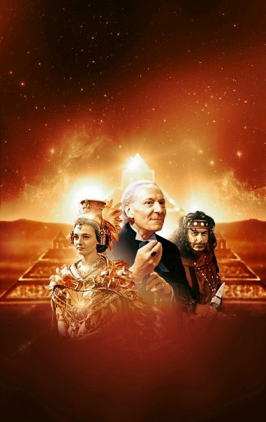

Эра Первого Доктора (1 сезон)
<<< НАЗАД ||| 6. Ацтеки ||| ДАЛЬШЕ >>>
Субтитры: Русские и Английские |  |
|---|
23 мая - 13 июня 1964
4 эпизода по 25 мин.
| 1. Храм зла 2. Воины смерти 3. Невеста для жертвоприношения 4. День темноты | Сохранились 16mm t/r |
|---|
 |  |  |
«Ацтеки» погружает команду в мир древней цивилизации, где Барбару принимают за богиню — это ставит её перед мучительным выбором: изменить историю или остаться в стороне. Доктор напоминает о запрете менять «фиксированные точки» времени, подчёркивая хрупкость хронологии. В напряжённой борьбе между долгом и состраданием раскрывается главная этическая дилемма сериала. Серия стала эталоном «исторического» эпизода без инопланетных угроз.
 VHS - ноябрь 1992 |  DVD - 21 октября 2002 |
|---|---|
DVD (SE) - 11 марта 2013 * Версия в нашей группе |  DVD - 4 сентября 2013 |


